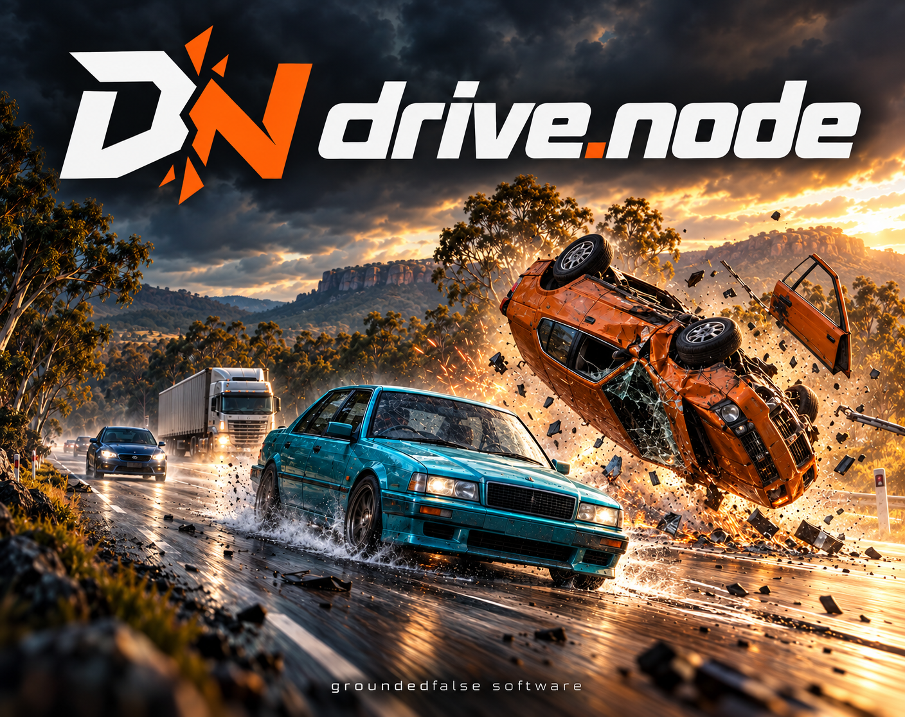

GAMES & APPS BY GROUNDED FALSE SOFTWARE
Drive. Crash.
See what happens.
Take control just before the crash. Try to make it through safely, or stick around and watch the destruction. Start with drive.node, then check out our V12 engine simulator, sailing simulator, economy simulator and music player.
See games & apps✳ Free web games and Android apps. Paid Windows game.
GAMES & APPS
Pick what you want to play.
Play in your browser or download for your device.
Each listing shows the platform and whether it’s free.
GROUNDED FALSE SOFTWARE
Built around physics.
Made to be played.
At Grounded False Software we build games and apps around things we want to try. Right now that means crash physics, a running V12 engine, sailing, an economy simulator and an Android music player.
Our main game is drive.node. The goal is to drive safely through a dangerous situation, but the crashes matter too. We want you to see the car bend, parts break away and the aftermath keep moving. Survive it, inspect the damage, then try again.
See the games